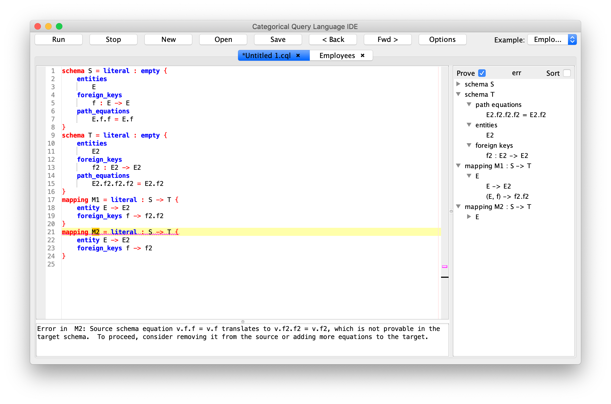
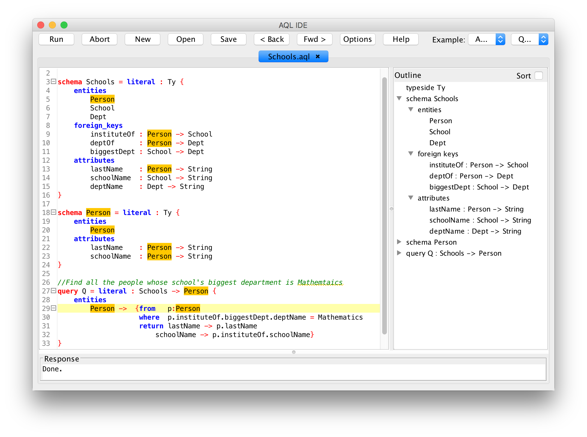
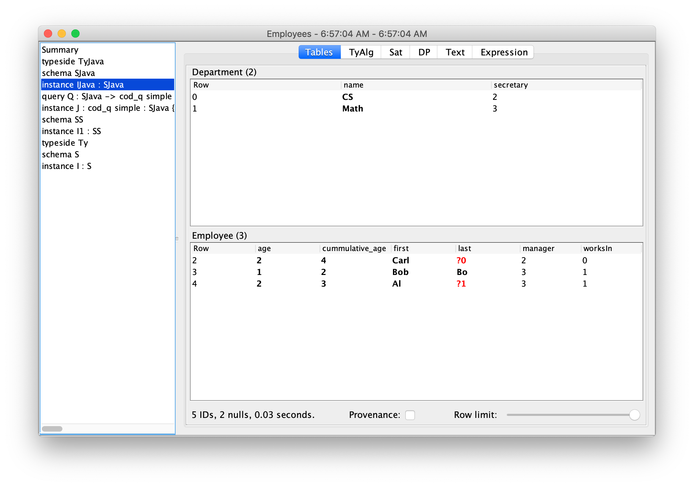
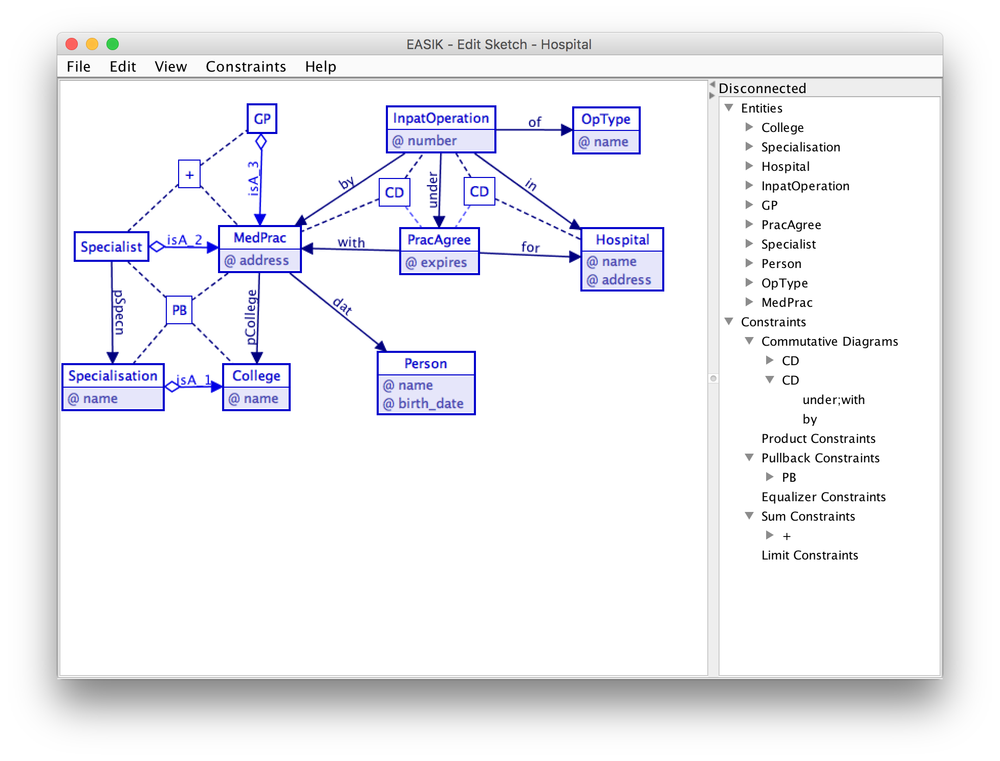

A principled way to transform data
Open-source CQL and its integrated development environment (IDE) performs data-related tasks — such as querying, combining, migrating, and evolving databases — using category theory, a branch of mathematics that has revolutionized several areas of computer science. Open-source CQL is production-ready for single-node in-memory data processing workloads, such as integrating data for data science. It is being commercialized by Conexus AI; for inquiries, contact Ryan Wisnesky.
|  |  |  |  |
{kind=link}
{kind=link}
{kind=link}
{kind=link}
Value Proposition
- Reduce risk of failure through artificial intelligence. CQL contains an embedded automated theorem prover that guarantees the correctness of CQL programs. For example, a CQL program cannot materialize an instance that violates a data integrity constraint. Such errors are detected at compile time, when they are easiest to fix.
- Preserve data quality. High-quality data is expensive to obtain, so it is important to preserve that quality throughout the data life-cycle. CQL programs evolve and migrate data in a mathematically universal way, with zero degradation. As such, data integrated by CQL has many advantages, including perfect provenance: every row in the output of an CQL program contains a lineage that describes exactly how that row was obtained from input data.
- Increased developer productivity through higher-level abstractions. CQL generalizes concepts from SQL using powerful principles from category theory. For example, CQL generalizes SQL's select-from-where queries from returning single tables to returning many tables related by foreign keys. Such higher-level abstractions enable developers to be more productive.
Key Features
- Flexible I/O: data can be imported into and exported out of CQL by JDBC-SQL, CSV, and more.
- Visualization: CQL schemas, databases, etc. can be displayed graphically.
- Rich data integrity constraints: CQL schemas contain entities, attributes, and foreign keys - as well as equations between them. One use of equations is for denormalization without the need to manually enforce the consistency of redundant data.
- Computational schemas: user-defined functions are part of CQL schemas and can be specified using java, javascript, or purely equationally. CQL's theorem prover can reason about user-defined functions and how they relate to data integrity constraints.
- More principled than SQL: relational concepts such as foreign keys re-appear, in a more principled form, in CQL. And CQL provides primitives that SQL lacks.
- 100% java. User-defined functions can be written in java or javascript, and a deep embedding of CQL into Haskell, in collaboration with Statebox, is under development.
- Stateless. CQL is not a database management system: it neither stores nor updates data. It is a canonical functional programming language and IDE whose scalability is similar to that of SQL and chase engines.
{kind=link}
Powered by Kan extensions / Silmarils / applied category theory.
{kind=link}